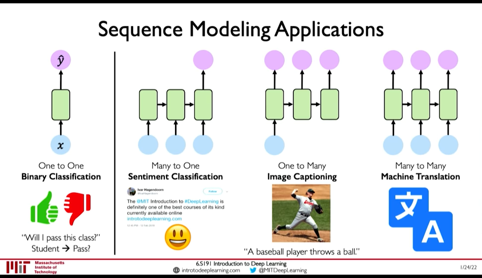
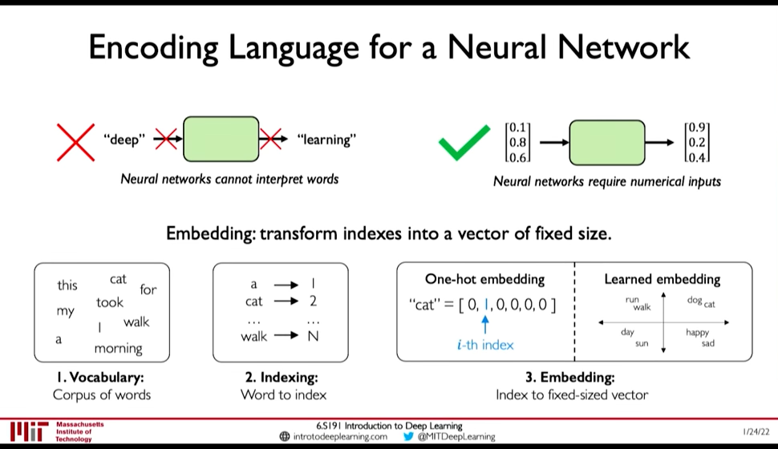
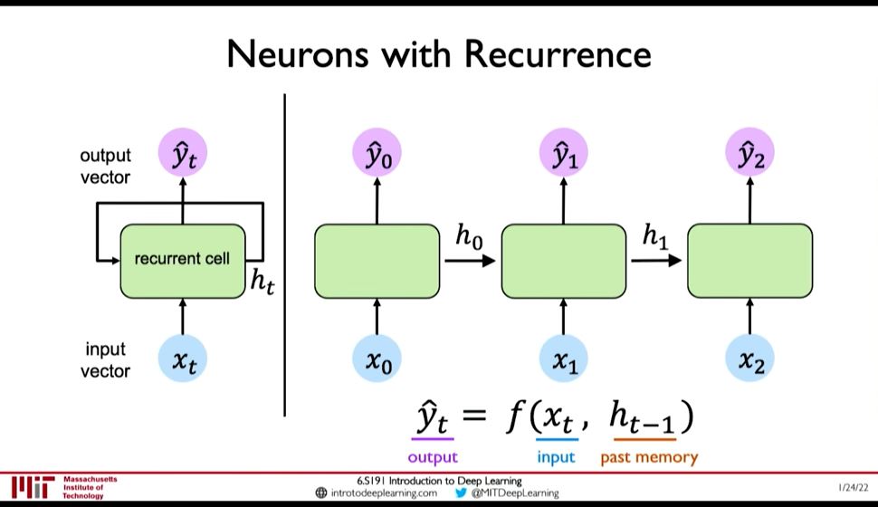
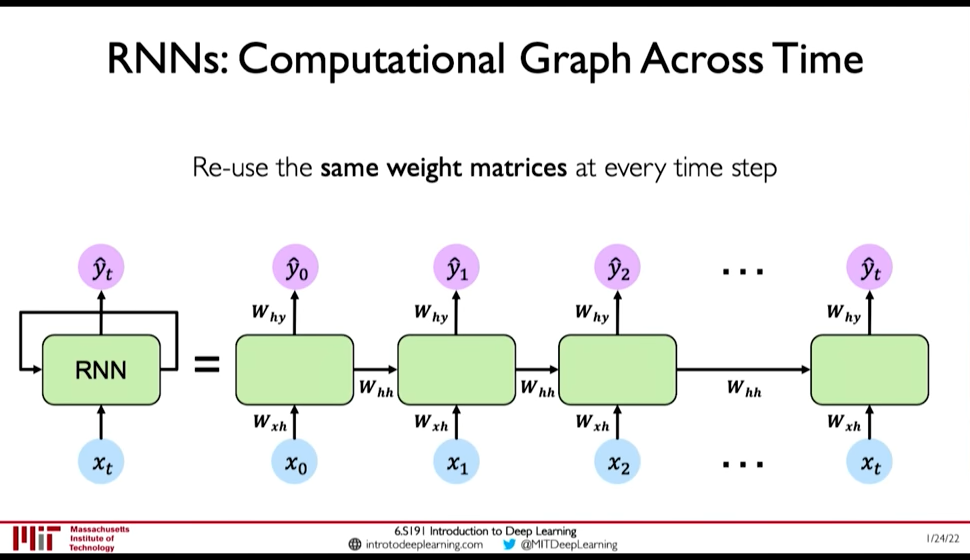
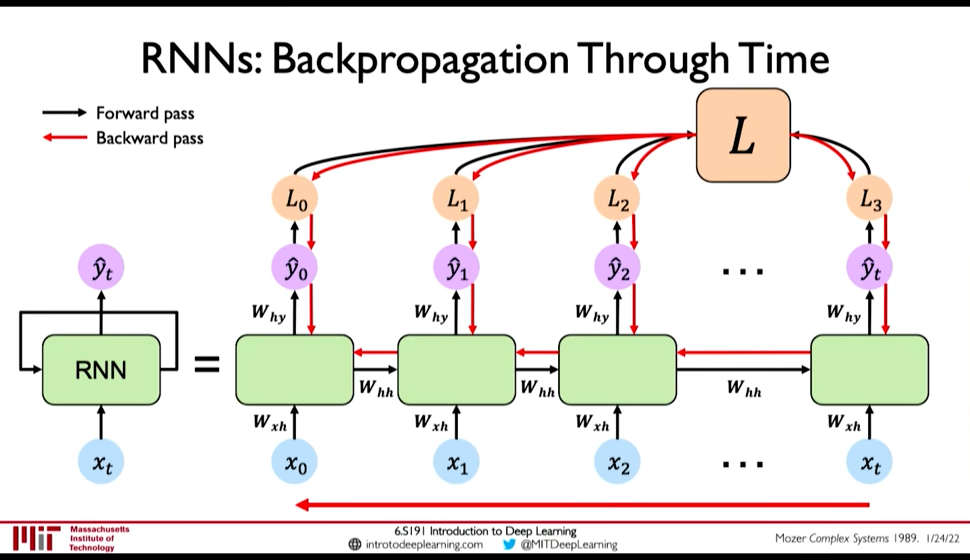
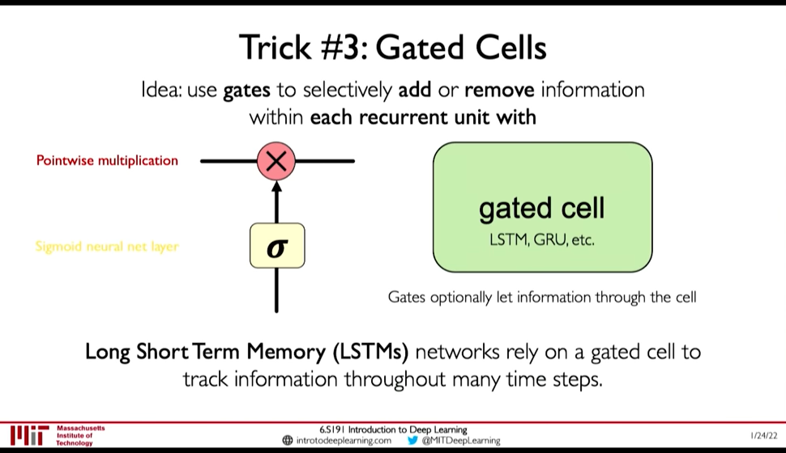
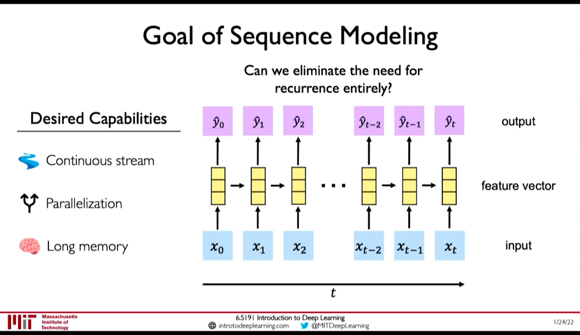
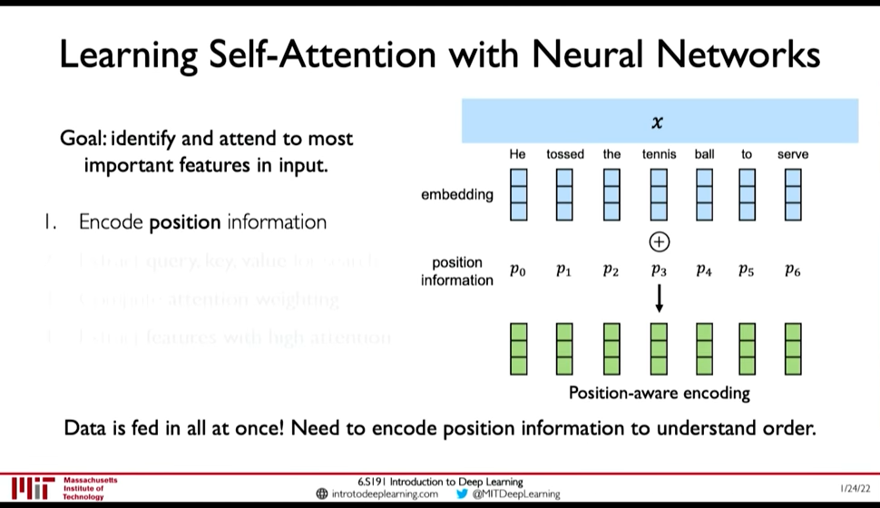
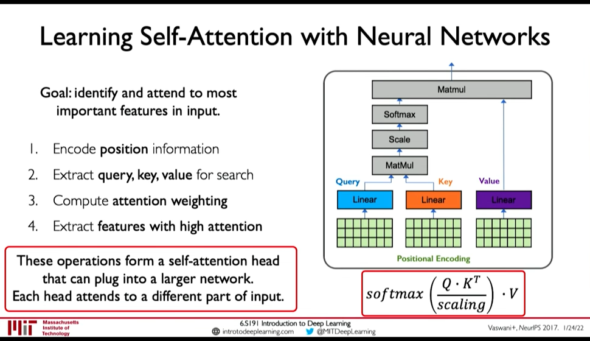

RNN and Transformers
Table of Contents
Lecture 2: Deep Sequence Modeling: In which we get introduced to sequential modeling, and how recurrence (& RNN) help in sequential modelling.
1. Sequential Modeling
 @ 0:04:06
Example of Sequence Modeling tasks:
- Sequential Input -> One Output : Sentiment Classification
- One Input -> Sequential Output: Image Captioning
- Sequential Input -> Sequential Output: Machine Translation
2. Sequence Modelling: Design Criteria
@ 0:20:29 To model sequences, we need to:
- Handle variable-length sequences
- Track long-term dependencies
- Maintain infromation about order
- Share parameters across the sequence
@ 0:20:41 RNN Meet these sequence modeling design criteria
2.1. Example Task: Predict the Next Word
First we need to address Embedding: i.e. How to represent language to a Neural Network? (@ 0:23:10)
- One-hot embedding
- Learned Embedding (0:25:50 Representation Learning)

Figure 1: Encoding Language for NN
Now observe that this problem demands all the Design Criteria for sequential modelling:
- 0:26:30 Variable-Length : Sentences are not of fixed size
- 0:26:38 Long-term dependencies: An Idea in the beginning of a text influences the meaning till the end.
- 0:27:07 Sequence Order: Order of words in a sentence matter.
3. Recurrence and RNNs
@ 0:08:32
Consider a single feed forward network, it takes input and gives output at a single timestep. Lets call this the recurrent cell and use it as building block to accept sequence of input (i.e. input/output at timestep)
- We can pass inputs from multiple timesteps, but what we need is to connect the current input to input from previous timesteps
- This means we need to propagate prior computation/information through time: via. Recurrence Relation (@ 0:08:06)
- We do this through, Internal Memory or State: \(h_t\)

Figure 2: Recurrent NN
@ 0:10:56
- In RNN, we apply a recurrence relation at every time step to process a sequence
- RNNs have a state, \(h\), that is updated at each time step as a sequence is processed
- \(h_t = f_W(x_t, h_{t-1})\) where the weight \(W\) is same across timesteps but the input \(x_t\) and the memory \(h_t\) change

Figure 3: RNN: Computation Graph Across Time @ 0:15:16
- \(y_t = f(W_{hy}, h_t)\) why not xt ?
- \(h_t = f(W_{hh}, h_{t-1}, W_{hx}, x_t)\)
4. Learning Algorithm: Back propagation through time (BPTT)
Loss function: @ 0:16:28
- Sum the loss function at individual timestep to get the total loss

Figure 4: BPTT @ 0:29:34
4.1. Exploding Gradients and Vanishing Gradients
@ 0:30:21 Computing gradients wrt \(h_0\) involves many factors of \(W_{hh}\) & repeated gradient computation.
4.1.1. Exploding Gradient
If the gradients are > 1 then, repeated gradient computation causes graident to explode. Exploding gradient problem can be solved by:
- Gradient Clipping (i.e. don't allow the gradients to increase beyond certain threshold)
4.1.2. Vanishing Gradient
However if the gradients are < 1, then as gradients are backpropagated the gradients decrease to near zero (vanishing gradient). Vanishing Gradient cause the model to focus on short term dependencies and ignore long term dependencies. It can solved by:
- Activation Function: ReLU (@ 0:32:35)
- Weight Initialization: Initialize weights to identity function, biases to zero to prevent rapid shrinking (@ 0:32:50)
- Network Architecture: Gated Cells (@ 0:33:05) [BPTT with partially uninterrupted gradient flow]
5. Gated Cells
@ 0:33:41 Instead of using simple feed forward network as recurrent cell, Gated Cells give better performance and improved training.

Figure 5: Gated Cell
LSTMs have the following property: (@ 0:35:24)
- Maintain a cell state
- Use gates to control the flow of information
- Forget gate gets rid of irrelevant information
- Store relevant information from current input
- Selectively update cell state
- Output gate returns a filtered version of the cell state
- Backpropagation through time with partially uninterrupted gradient flow (This handles the vanishing gradient problem)
6. Limitations & Desired Capabilities of RNN
RNN as presented above have the following limitations: @ 0:39:20
- Encoding Bottleneck: RNN need to take long sequence of information and condense it into a fixed representation
- Slow, no parallelization
- Not long memory: ~10, 100 length sequences are ok with LSTM, but not ~1000

Figure 6: Desired Capabilities of RNN @ 0:41:48
In contrast to those limitations, what we want is:
- Continuous Stream
- Parallelization
- Long Memory
Idea 1: Feed everything into dense network: (@ 0:42:52)
- Recurrence is eliminated, but
- Not scalable
- No order
- No long memory
Idea 2: Identify and Attend to what's important (@ 0:42:58)
7. Attention Is All You Need: Transformers
@ 0:43:28
- Identify parts to attend to
- Extract features with high attention
Attention has been used in:
- AlphaFold2: Uses Self-Attention
- BERT, GPT-3
- Vision Transformers in Computer Vision
7.1. Idenitfying parts to attend to is similar to Search problem
@ 0:44:54
- Enter a Query (\(Q\)) for search
- Extract key information \(K_i\) for each search result
- Compute how similar is the key to the query: Attention Mask
- Extract required information from the search i.e. Value \(V\)

Figure 7: Attention as Search
7.2. Self-Attention in Sequence Modelling
Goal: Identify and attend to most important features in input
We want to elimintate recurrence because that what gave rise to the limitations. So, we need to encode position information

Figure 8: Position-Aware Encoding (@ 0:48:32)
- Extract, query, key, value for search
- Multiply the positional encoding with three matrices to get query, key and value encoding for each word
- Compute attention weighting (A matix of post-softmax attention scores)
Compute pairwise similarity between each query and key => Dot Product (0:51:01)
Attention Score = \(\frac {Q . K^T} {scaling}\)
- Apply softmax to the attention score to get value in \([0, 1]\)
- Extract features with high attention: Multiply attention weighting with Value.

Figure 9: Self-Attention Head